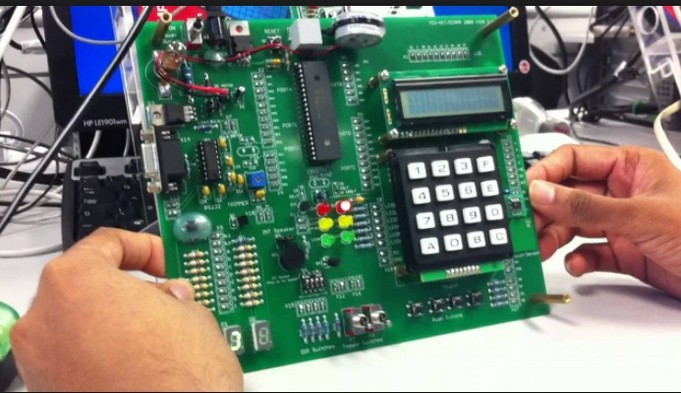
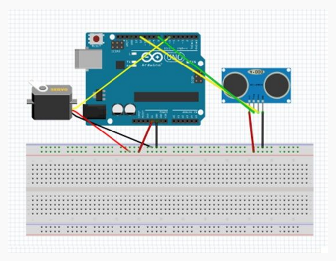

آردوینو
پروژه رادار
عناوین
میکروکنترلر چیست؟
fa.wikipedia.org
“ نوعی ریزپردازنده است که دارای حافظهٔ دسترسی تصادفی (RAM) و حافظهٔ فقط خواندنی (ROM)، تایمر، پورتهای ورودی و خروجی (I/O) و درگاه ترتیبی (Serial Port پورت سریال) در درون خود تراشه میباشد و میتواند به تنهایی بر روی ابزارهای دیگری کنترل اعمال کند.”
میکروکنترلرهای رایج
میکروکنترلرهای رایج
Atmel =>Avr=>8051 FamilyMicrochip =>PIC,dsPIC
Arm
تفاوت میکروکنترلر با میکروپروسسور
تفاوت میکروکنترلر با میکروپروسسور
کاربرد میکروکنترلر ها
کاربرد میکروکنترلر ها
میكروكنترلرها به طور گستردهای در تولید سیستمهای تك منظوره به كار می روند. منظور از سیستم تك منظوره سیستمی است كه از میكروكنترلر یا میكرپروسسور فقط برای یك كار استفاده می كند

آردوینو چیست؟
آردوینو چیست؟
آردوینو ابزاری است برای تولید کامپیوترهایی که نسبت به کامپیوتر شخصی شما، مقدار بیشتری از دنیای فیزیکی را احساس و کنترل می کنند. این ابزار، یک پلت فرم محاسباتی فیزیکی open-source است که بر اساس یک برد میکروکنترلر ساده تهیه شده، و نیز یک محیط توسعه برای نوشتن نرم افزار جهت کار با برد می باشد.

چرا آردوینو؟
◄ارزان
◄مستقل از سیستم عامل (Cross-platform)
◄محیط برنامه نویسی شفاف و ساده
◄نرم افزار قابل توسعه و open-source
◄سخت افزار قابل توسعه و open-source
انواع برد های آردوینو
شیلد ها و سنسور های آردوینو
شیلدهای آردوینو
با استفاده از آردوینو و به کمک شیلدهای متنوعی که برای آردوینو ساخته شده به سادگی میتوانید پروژههای اینترنت اشیا را پیادهسازی کنید. بردهای آردوینو را بدون نیاز به پروگرامر میتوان از طریق کابل USB و IDE اوپن سورس آردوینو پروگرام کرد.
سنسور های آردوینو

محیط توسعه و زبان برنامه نویسی
محیط توسعه
زبان برنامه نویسی

پروژه رادار
موارد مورد نیاز
شماتیک مدار
Processing is an open source computer programming language and integrated development environment (IDE) built for the electronic arts, new media art, and visual design communities with the purpose of teaching the fundamentals of computer programming in a visual context, and to serve as the foundation for electronic sketchbooks.
دیگر پروژه ها
instructables.com
نمونه ها
نمونه ها

منابع
#avr-tutorials.com
#circuitdigest.com
#c.76.my
#ahwazhobby.ir
#sisoog.com
#diginic.net
#cdn-blog.adafruit.com
#etutorshelp.com
#wikipedia.org
#http://www.instructables.com/id/Arduino-RadarUltrasonic-Detector/
#howtomechatronics.com